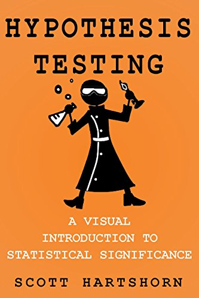

|  |
DescriptionStatistical significance is a way of determining if an outcome occurred by random chance, or did something cause that outcome to be different than the expected baseline. Statistical significance calculations find their way into scientific and engineering tests of all kinds, from medical tests with control group and a testing group, to the analysis of how strong a newly made batch of parts is. Those same calculations are also used in investment decisions. This book goes through all the major types of statistical significance calculations, and works through an example using them, and explains when you would use that specific type instead of one of the others. Just as importantly, this book is loaded with visual examples of what exactly statistical significance is, and the book doesn't assume that you have prior in depth knowledge of statistics or that you regularly use an advanced statistics software package. If you know what an average is and can use Excel, this book will build the rest of the knowledge, and do so in an intuitive way. |